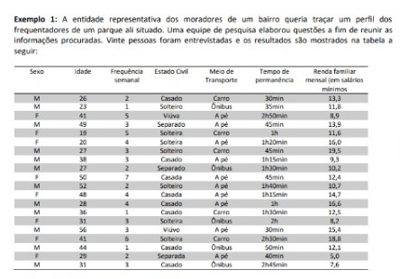

Estatística Básica
Conceitos Básicos:
A estatística é um conjunto de métodos de pesquisa com o fim de possibilitar a interpretação de um conjunto de dados em um senso.
Para isso, precisamos de alguns conceitos:
- População: É o conjunto de elementos que se deseja investigar.
- Amostra: É um subconjunto da população, uma pesquisa que envolve toda a população é um censo e uma pesquisa com uma parte da população é chamada de pesquisa por amostragem.
-
Variável: São os aspectos a serem observados na pesquisa, podem ser:
Qualitativa: Características, qualidades, atributos, preferências do entrevistado. E podem ser: sexo; estado civil; meio de transporte; nível de ensino que estuda etc.
Quantitativa: são dados que podem ser medidos, quantificados. Tem dois tipos:
- discreta: os valores são obtidos a partir de uma contagem, e são números naturais, como o número de irmãos, quantidade de computadores que tem em casa, número de vezes que fez o enem, etc.
- Contínua: Valores obtidos a partir de uma medição e são números reais, como: renda, tempo que percorre uma distância, idade, peso, altura, etc.
Exemplo:

voltar